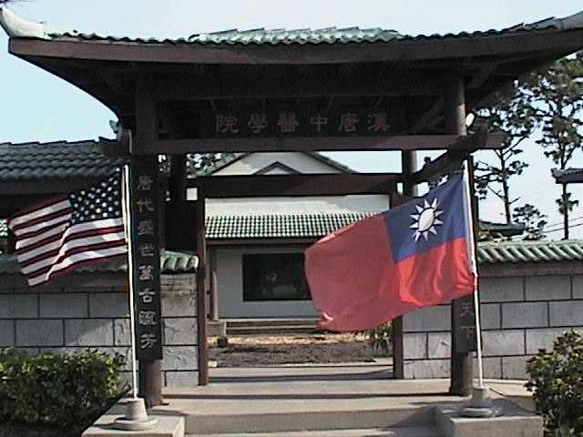

超越五千年以上的傳統中醫學術
美國漢唐中醫
| 漢唐系列解說更新中 | 愛心基金義助與案例 | 時事評論 | |
| 一般討論論文區 | 十三類不治之人 | 優質的中醫書籍 | |
| SMARTO雜誌投稿 | 長壽的報導與評論區 | 支持中醫的人士 | |
| 2009/04/28更新流行性疾病討論區 | 天紀人紀地紀 | 惡質的西藥廠 | |
| 2009/04/12更新中西醫的關係 | 人紀系列 | 虛擬中醫衛生署署長張仲景 | |
| 我的診療日誌 | 天紀 | 2009/04/01.病人必須注意事項 | |
| 2008/12/02更新記取血的教訓 | 地紀系列 | 診所的營運方針 | |
| 錯誤的醫學觀念 |
2009/03/22正式論文區 再更新 |
2009/07/11.專論牛奶的報導 | |
| 2009/04/23.專門介紹好醫師與好書區 | 惡劣又自大的台大醫院老教授 | ||
| 笑傲江湖(2008/12/02更新) | 精彩的人紀班學生的診療案例(又有更新) | 超爛的台灣西醫衛生署專區. | |
| 2009/04/06.史上超爛的研究 | 病症研究區 | 2009/05/09.我使用的中藥粉劑 | |
| 2010/02/08.版權聲明與抓盜版專區. | 2010/01/05.專門從事栽贓嫁禍的西藥廠 | 2009/05/05.自殺專區 | |
| 2010/09/17.找到牛奶致癌的確實證據 | 2010/06/15.經方家的保健食品. | 2009/10/28.神州行.最新更新消息 | |
|
2010/09/23.人間最壞的就是維他命. |
2010/09/20.2011年跟診之規定與時間.(更新) | 2010/01/13.正式開始接受大陸購買人紀. | |
| 2011/01/24.西醫就是佔著毛坑不拉屎的醫學. | 2011/02/04.2011年祝福大家健康 |
2011/01/21.世紀之戰 |
|
| 2011/03/06.約翰霍普金斯最新癌症研究 | 2011/03/22.天紀與人紀的著作權聲明. | 2011/02/14.病患須知 | |
| 2011/04/01.倪老師說故事. | 2012/01/06.美國漢唐經方中醫診所分院~深圳診所 | 2013/03/03 學生 診療案例分享區 | |
|
2014/01/23.矽谷中醫損友團 漢唐中醫台灣後援會 當張仲景遇上史丹佛 漢唐經方學會 |
|||

近日來因為此頁篇幅過長，需要重新整理，所有文章都在歸類中，一篇不少，希望大家能適應。
由於更新網頁散佈於許多子連結中，如果大家擔心會遺漏一些新文章，讀者可以使用這個網站，http://hantangrss.blogspot.com/這樣隨時就可以看到我的最新更新文章，感謝大家對我的支持與鼓勵。也同時感謝這位出身矽谷的電腦工程師，為本站所設計的專用軟體。
本人之網站設立於美國，受到美國聯邦智慧財產權法的保護，請尊重智慧財產權 ，本網頁中有應用到的新聞報導部分，其所有著作權均屬於原媒體單位的，本人是 引用它來做為評論之依據，所有評論部分是屬於本人之智慧財產權。本人的作品如果受到侵害，將依法提出追究。任何人使用本人之知識 , 但是必須註明出處 , 竊取本人之專業知識據為己有 , 為違反智慧財產權法 , 本人將追究其刑事責任 , 絕不姑息養奸 , 請勿以身試法 , 如果你想引用本網站之文章，著作權皆屬本人所有，任何人作文字轉載或網站轉貼，均須經本人同意」 有問題詢問時 , 請留下你自己的FAX號碼 , 許多人留E-Mail給我 , 恕我無法回覆 , 否則我的E-Mail信箱會塞爆兼中毒,無中藥可治之毒 , 請見諒.
讀者可以進入大陸支援網站 他們整理後的內容比我這清楚許多,我只是隨興而寫的,所以比較凌亂些.
許多讀者來傳真,希望我來解決你們的問題,請勿抱希望,因為我是無法回答你們的問題,我這裡是個學術網站,不是醫療諮詢網站,讀者有疾病的問題時,請就近找中醫師來協助你們,你們問到我時,我只有一句話,要找我看病請來我這面對面看,因為讀者不是專業中醫所以你們寫的病史我無法捉住重點,等於是雞同鴨講,我實在無能為力去猜測你們遇到什麼問題,所以請千萬不要再傳來你們個人的問題,以免耽誤你們的病情,目前我是一律不做回答的,請勿再試,並請見諒中.
美國傳真號碼 : 1-321-454-9974
Hits Since 05/18/2004